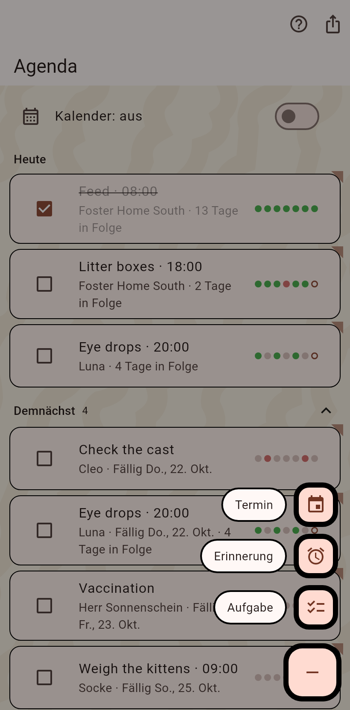
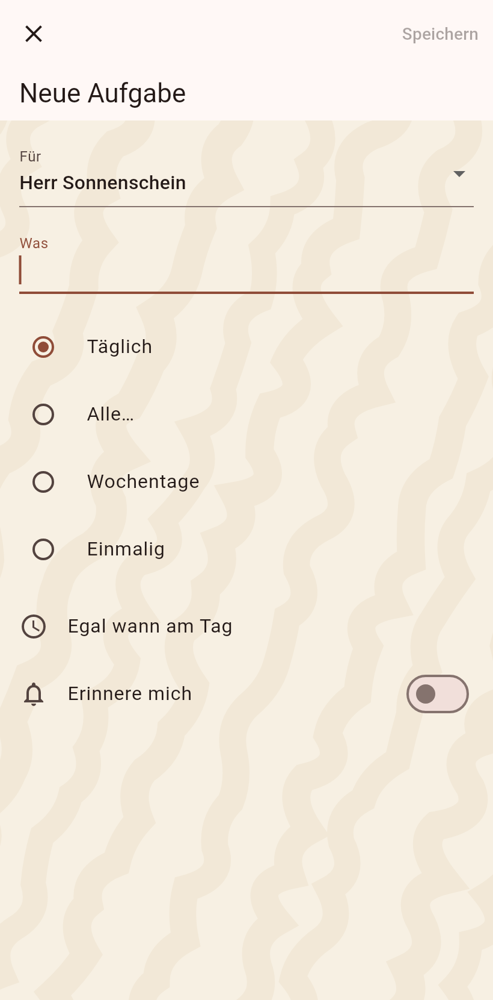
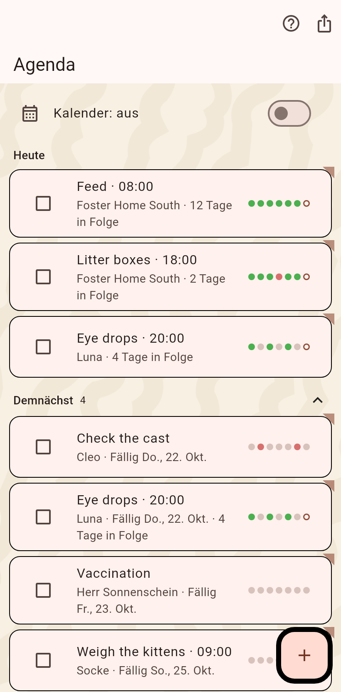

1. Die Agenda
Die Aufgaben von heute mit Kästchen und Serien, die Termine danach. Das Plus unten rechts legt an.

2. Die Wege anzulegen
Das Plus fächert auf: ein Termin, eine Erinnerung, eine Aufgabe.

3. Die Aufgabe
Für wen, was, und wie oft: täglich, alle so viele Tage, an Wochentagen, oder einmalig mit Fälligkeit. Eine Uhrzeit und eine Erinnerung, wenn du willst. Speichern.

4. Abhaken
Zurück auf der Agenda steht die Aufgabe unter Heute. Das Kästchen hakt sie ab und antwortet mit der Pfote; die Punkte zeigen die letzten sieben Tage.
